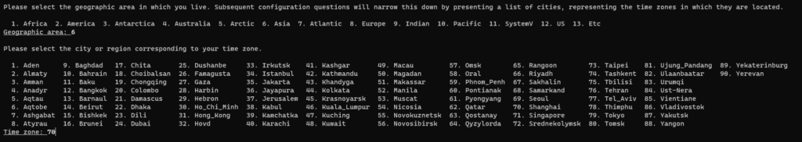
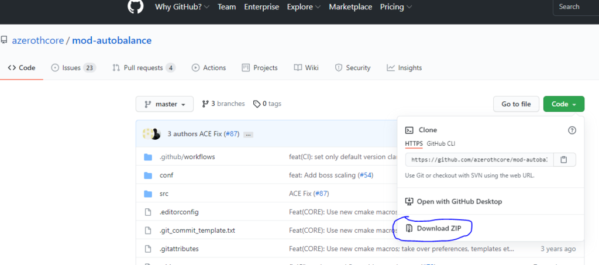
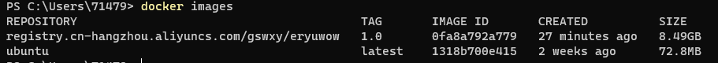

Docker编译Azerothcore源码
维基百科
Docker 是一个开放源代码软件，是一个开放平台，用于开发应用、交付（shipping）应用、运行应用。 Docker允许用户将基础设施（Infrastructure）中的应用单独分割出来，形成更小的颗粒（容器），从而提高交付软件的速度。
Docker容器与虚拟机类似，但二者在原理上不同。容器是将操作系统层虚拟化，虚拟机则是虚拟化硬件，因此容器更具有便携性、高效地利用服务器。 容器更多的用于表示 软件的一个标准化单元。由于容器的标准化，因此它可以无视基础设施（Infrastructure）的差异，部署到任何一个地方。另外，Docker也为容器提供更强的业界的隔离兼容。
前言
我一直想写下Liunx下的编译教程，毕竟Liunx运行起来更高效。但考虑到很多人还是用的Windows系统，所以最终决定用Docker运行Liunx的方式做个编译教程。本文的目的是教会大家怎么用Docker，怎么在Liunx系统上编译服务端，然后文章最后我也会发布个纯净版的Azerothcore服务端镜像，镜像文件有点大，毕竟内含Ubuntu系统、源码、编译文件、DBC、地图文件、服务端等，同时按本文教程可以随时更新，同步Azerothcore官方进度。
Docker的维基百科解释如上，你把Docker理解为虚拟机就好了，而且Docker是和宿主机共用内核，对性能影响几乎可以忽略不计。另外我们在Docker上编译Azerothcore源码，可以不必担心系统环境问题，你把服务端给别人时候也不用担心别人系统运行不起来，Docker在Windows、Liunx、Macos上都可以运行。你以后发布服务端就是4条命令的事情，别人下载服务端也就是5条命令的事情，简单、方便、可移植就是它的特性。
Docker安装
本教程Liunx也适用，Liunx的话建议使用Ubuntu 20，如果你想在Ubuntu不使用Docker直接编译，那么直接跳到“第二步：编译安装”的“环境部署”（请先切换至root）；
另外说个题外话，昨晚闲得无聊，手机下了Termux装Ubuntu，成功编译并运行了服务端，其实现在手机性能都过剩了，我手机Mate40E，8G8H配置，配合本网站内的内网穿透教程，只是自己玩或者和朋友玩的话，比你买个服务器香多了吧。
言归正传，说下Windows环境，接下来开始Docker的安装：
- 确保win10版本为教育版、专业版或企业版，64位；
- 进入Docker官网下载选择Windows版本进行安装；
- 打开Docker，出现“Docker Engine starting…”，等待一会出现“Strat”和“skip……”两个按钮，点“skip……”即可，安装成功。
服务端搭建
以下命令均在Windows自带的PowerShell（管理员身份打开）内运行：
安装Ubuntu
拉取Ubuntu镜像
docker pull ubuntu |
运行Ubuntu容器
docker run -itd --name eryuwow -p 8085:8085 -p 3306:3306 -p 3724:3724 ubuntu #eryuwow是我自定义的容器名称，你可以改成其他名字；8085、3306、3724是我们需要用到的端口，把它从容器里映射出来 |
编译安装
进入Ubuntu容器
docker exec -it eryuwow /bin/bash |
环境部署
apt update && apt install git && apt install curl && apt install unzip && apt install vim && apt-get install sudo && apt-get install tmux && apt-get install tzdata |
在此期间显示“Do you want to continue? [Y/n]”的，输入y回车即可，以下若出现类似提示将不再赘述。期间如果让你输入国家，请依次输入6和70，如图所示：

Github加速
这个很重要，非常重要，否则接下来你下载源码和更新时候会访问不了或者很慢很慢。但如果你下载Github文件不慢的话，建议不要加速。下面讲下host文件加速Github的方法，打开这个网址：
https://raw.hellogithub.com/hosts |
复制其中内容，接下来输入：
vim /etc/hosts #按i进入编辑模式，最后另起一行，右键即可粘贴上面复制的内容，按Esc，输入“:wq”回车 |
下载源码
cd / && git clone https://github.com/azerothcore/azerothcore-wotlk.git; cd azerothcore-wotlk |
如果出现“fatal: unable to access ‘https://github.com/azerothcore/azerothcore-wotlk.git/’: GnuTLS recv error (-110): The TLS connection was non-properly terminated.”，请重新输入一遍命令。
上面是官方地址（保证最新），如果下载速度过慢不愿意等，按Ctrl+C结束下载，换成以下命令（我同步的Gitee地址，不保证最新）：
cd / && git clone https://gitee.com/gswxy/azerothcore-wotlk.git; cd azerothcore-wotlk |
安装依赖
cp /azerothcore-wotlk/conf/dist/config.sh /azerothcore-wotlk/conf/config.sh && vim /azerothcore-wotlk/conf/config.sh #按i进入编辑模式，找到“OSDISTRO="ubuntu”，删去前面的#，按Esc，输入“:wq”回车 |
编译源码
./acore.sh compiler all |
数据库安装
vim /etc/mysql/mysql.conf.d/mysqld.cnf #按i进入编辑模式，在“bind-address= 127.0.0.1”前面输入#，按Esc，输入“:wq”回车 |
服务器设置
下载data和地图文件
./acore.sh client-data |
设置配置
cp env/dist/etc/authserver.conf.dist env/dist/etc/authserver.conf |
启动服务器
手动启动
建议第一次启动用手动方式，方便排查错误，以管理员身份打开PowerShell：
docker exec -it eryuwow /bin/bash #进入容器 |
新建一个命令窗口，窗口名称命名为auth-session，以运行authserver：
tmux new -s auth-session #新建一个命令窗口窗口名称为 |
先按ctrl+b， 放开后再按d，可以退出该命令窗口（进程不会结束），新建一个命令窗口，窗口名称命名为world-session ，以运行worldserver：
tmux new -s world-session |
请注意，上述命令运行后， 只要容器不关闭，authserver和 worldserver如果出现异常中断，是会自动重启的。常用的tmux命令有：
tmux attach -t SESSION-NAME #SESSION-NAME替换为你的窗口名称，如auth-session，即可查看authserver运行情况 |
一键启动
cd /azerothcore-wotlk && vim startup.sh |
输入以下内容，按Esc，输入“:wq”回车：
#!/usr/bin/env bash |
以后启动容器后，打开cmd或者 PowerShell，输入以下命令就可以启动服务端了：
docker exec -it eryuwow /bin/bash #进入容器 |
进阶教程
更新服务器
docker exec -it eryuwow /bin/bash #进入容器 |
另外只要你在worldserver.conf里面没有改过默认值：
Updates.EnableDatabases = 7 |
你在每次启动服务端的时候都会自动更新数据库。
更改data文件
如果你想用自己的data文件，或者想替换dbc文件，可以使用cp命令，下面示例如下：
docker cp C:\Users\71479\Downloads\data.zip eryuwow:/azerothcore-wotlk/env/dist/bin #该命令为另起个PowerShell窗口后输入，拷贝data.zip到docker容器对应目录内，这里的“C:\Users\71479\Downloads\data.zip”替换成你本机data.zip的路径 |
添加功能
这个链接是官方Github存储库，里面有众多的功能模块，如果你英文不好的话，多用下翻译，以自动平衡功能为例：

下载后，结合“（二）更改data文件”，将压缩包复制到/azerothcore-wotlk/modules目录，然后输入以下命令重新编译即可：
cd /azerothcore-wotlk && ./acore.sh compiler build |
需要注意的是你要检查下载下来的压缩包内是否有sql文件，如果有的话，需要你将这些文件导入到数据库，比较简单的方法是连接数据库后运行该sql文件。
连接数据库
这里建议使用HeidiSQL（因为免费），你也可以用Navicat SQL软件。地址写localhost即可，用户名root，密码是前面你自己设置的即可（我设置的是root）。
解决内存占用过大问题
因为docker用的是WSL2，可能会导致Vmmem进程内存占用过大，你可以给你的容器设置最大内存的方式来缓解：
1.按下Windows + R 键，输入 %UserProfile% 并运行进入用户文件夹；
2.新建文件，命名为.wslconfig，然后记事本编辑；
3.填入以下内容并保存, memory为系统内存上限，这里我限制最大4GB，可根据自身电脑配置设置：
[wsl2] |
4.然后启动cmd命令提示符，输入wsl --shutdown，重启下docker即可。
发布服务端
按以上教程你已经做好了一个纯净可更新的WLK服务端，如果你想分享给别人的话，按以下步骤来做：
开通镜像仓库
国内的话还是选择阿里云镜像服务吧，别人下载速度也快些，首先你要注册个阿里云账号，然后打开容器镜像服务，选择个人版（免费），点击镜像仓库——创建镜像仓库，新建个命名空间和仓库名称，仓库类型选择公开，摘要自己填写，提交即可。
容器打包为镜像
以管理员身份打开PowerShell，执行：
docker commit -m="eryuwow" -a="eryuwow" eryuwow eryuwow:1.0 #-m后面是描述信息，-a后面是创建者，eryuwow是容器名，eryuwow:1.0是镜像名：版本号 |
推送镜像
阿里云容器镜像服务/实例列表/镜像仓库/基本信息，里面有详细的操作指南，下面是我的示例：
docker login --username=**** registry.cn-hangzhou.aliyuncs.com ##其中****换成你阿里云账号，回车输入密码 |
别人怎么用
别人安装好docker后， 以管理员身份打开PowerShell：
docker pull registry.cn-hangzhou.aliyuncs.com/gswxy/gswxy:1.0 |
上述命令可以在你的阿里云容器镜像服务/实例列表/镜像仓库/基本信息：从Registry中拉取镜像中可以看到，
这个镜像是我的，跟着教程走下来的纯净的服务端，数据库用户名是root，密码是gswxy.com，你可以执行命令拉取下来。
拉取下来后，可以用docker images命令查看当前的镜像，如图所示：

然后输入以下命令运行容器：
docker run -itd --name gswxy -p 8085:8085 -p 3306:3306 -p 3724:3724 0fa8a792a779 #其中gswxy你可以自定义名字；0fa8a792a779是上面图例的IMAGE ID |
然后输入以下命令进入容器和运行服务端：
docker exec -it gswxy /bin/bash #进入容器 |
最后，如果有帮助到你，打个赏吧，有什么问题QQ群（938973736）交流。
 微信
微信 支付宝
支付宝